서울특별시 강동구 천호동 447-17 강동역신동아파밀리에 1101동 37층 3702호
[매니저 · 에디터에서 「일정」 삽입] 붙여넣기로는 안 들어갑니다. 에디터 일정 버튼 →
제목 강동역신동아파밀리에 / 일시 2026.08.31(월) 10:00~11:10 /
장소 서울동부지방법원(검색하면 지도 자동) / 설명 사건번호 2025타경51365.
🔴 입찰 시각은 우리 수집 데이터에 없어 같은 법원·같은 날짜 사건에서 가져왔습니다 — 법원 공고로 한 번 확인해 주세요.
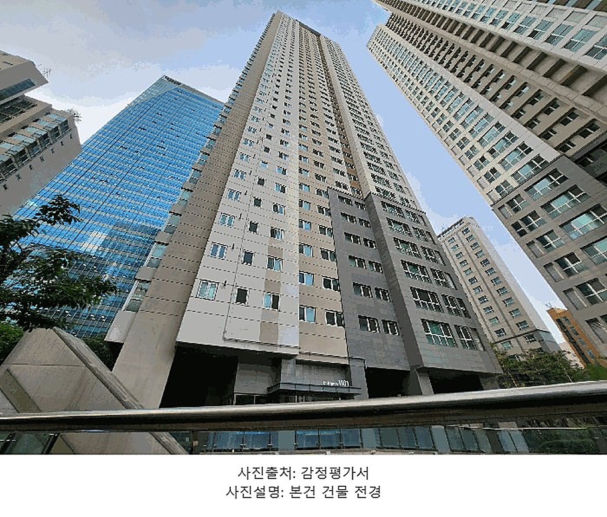
| 관할 | 서울동부지방법원 |
|---|---|
| 사건번호 | 2025타경51365 |
| 소재지 | 강동구 천호동 447-17 · 1101동 3702호 |
| 면적 | 전용 107.34㎡ (32.47평) · 공급 43평형 · 대지권 29.45㎡ |
| 준공 | 2015년 7월 사용승인 |
| 감정가 | 13억 6,000만 원 |
| 최저매각가 | 13억 6,000만 원 (1차 · 감정가의 100%) |
| 입찰보증금 | 1억 3,600만 원 |
| 매각기일 | 2026년 8월 31일 |
2015년 7월에 준공된 공급 43평형(전용 107.34㎡ · 32.47평)입니다. 감정가와 최저매각가격이 둘 다 13억 6,000만 원으로 같습니다. 아직 한 번도 유찰되지 않아 할인이 붙지 않은 회차라는 뜻입니다.
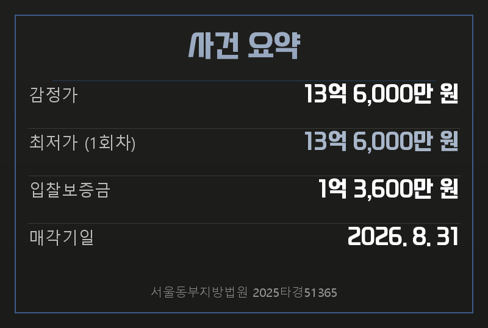
감정가 13억 6,000만 원 · 최저가 13억 6,000만 원(1회차) · 입찰보증금 1억 3,600만 원 · 매각기일 2026년 8월 31일
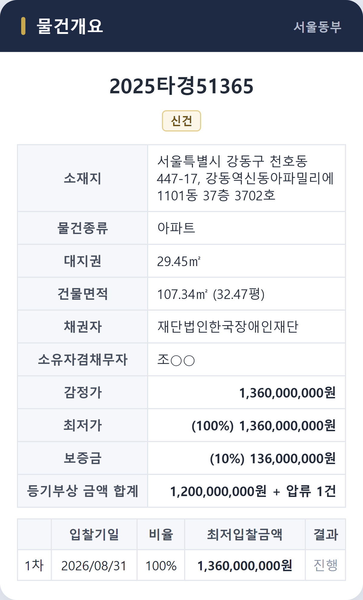
집행관 현황조사서는 본건을 강동역(지하철 5호선) 북측 인근으로 적었습니다. 주위는 아파트단지와 상업·업무용 건물, 근린생활시설이 섞인 지역입니다. 차량 출입이 가능하고 인근에 노선버스정류장이 있습니다. 남서측으로 노폭 약 50m 포장도로, 북동측·북서측으로 각각 약 12m 도로에 접합니다.
[매니저 · 에디터에서 「장소」 삽입] 에디터 장소 버튼 → 강동역신동아파밀리에 검색. 위 「일정」의 지도는 입찰 법원, 이 지도는 물건 단지입니다 — 서로 다른 곳입니다.
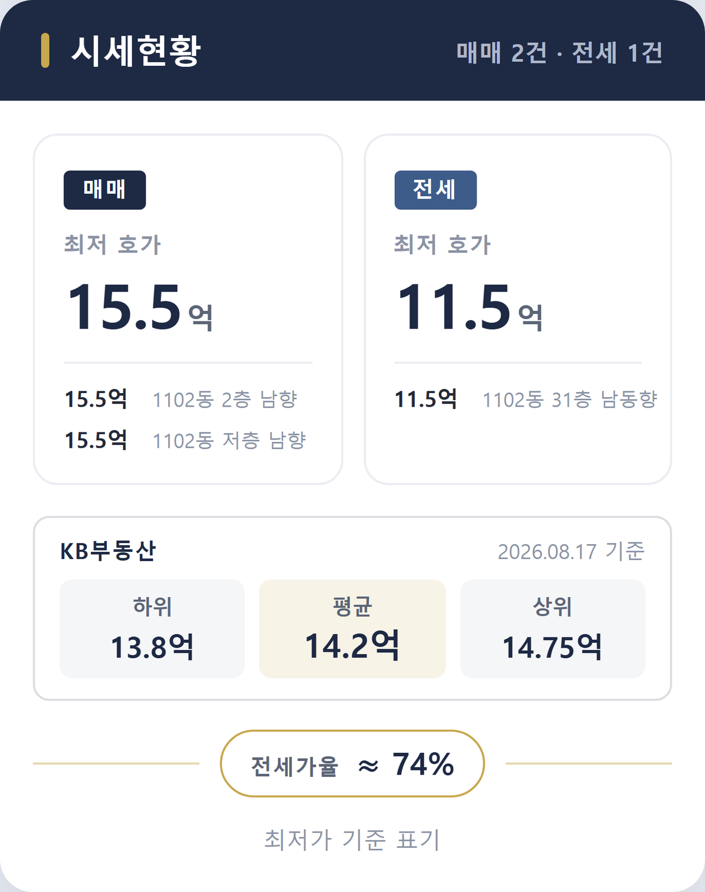
| 말소기준일 | 2021년 11월 17일 |
|---|---|
| 임차인 전입일 | 2015년 12월 23일 (말소기준보다 앞섬) |
| 확정일자 | 2015년 12월 23일 |
| 보증금 | 7억 원 |
| 배당요구 | 하였음 (2025년 7월 1일 · 종기 7월 14일) |
| 대항력 | 있음 |
전입일이 말소기준일보다 앞서므로 대항력이 있습니다. 매각물건명세서도 “매수인에게 대항할 수 있는 임차인 있으며, 보증금이 전액 변제되지 아니하면 잔액을 매수인이 인수함”이라고 적고 있습니다. 보증금 7억 원 중 7,000만 원은 2019년 12월 18일에 증액됐고 증액분 확정일자는 2020년 1월 13일인데, 이 역시 말소기준일보다 앞섭니다.
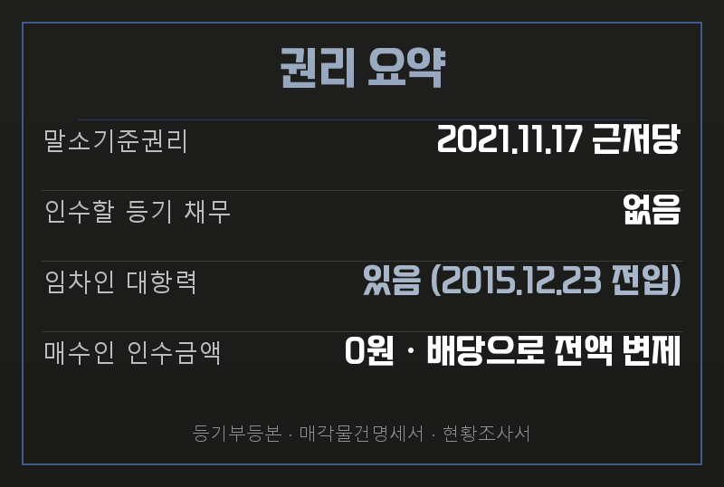
말소기준권리 2021년 11월 17일 근저당 · 인수할 등기 채무 없음 · 임차인 대항력 있음(2015년 12월 23일 전입) · 매수인 인수금액 0원
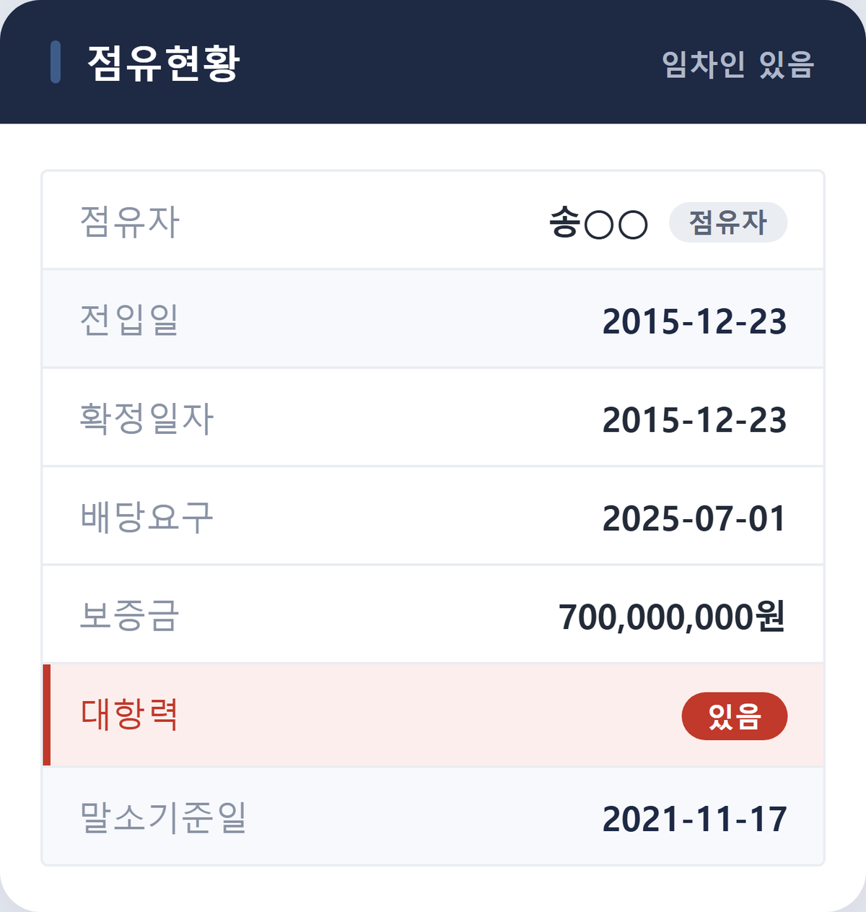
| 매각대금 | 13억 6,000만 원 (최저가 기준) |
|---|---|
| 경매비용 | - 825만 원 |
| 임차인 배당 | 7억 원 전액 |
| 미배당 잔액 | 0원 |
| 매수인 인수금액 | 0원 |
| 근저당 배당 | 6억 5,174만 원 (청구 12억 중) |
임차인이 배당요구를 종기 안에 했고, 확정일자가 근저당보다 앞서므로 배당에서 먼저 받습니다. 최저매각가로 낙찰돼도 보증금 7억 원이 전액 배당됩니다. 명세서의 인수 문구는 “전액 변제되지 아니하면”이라는 조건부이고, 이 가격대에서는 그 조건이 성립하지 않습니다. 낙찰자가 따로 물어줄 보증금은 없습니다.
[추정 · 최저매각가 기준 예상배당표에 따른 계산입니다]
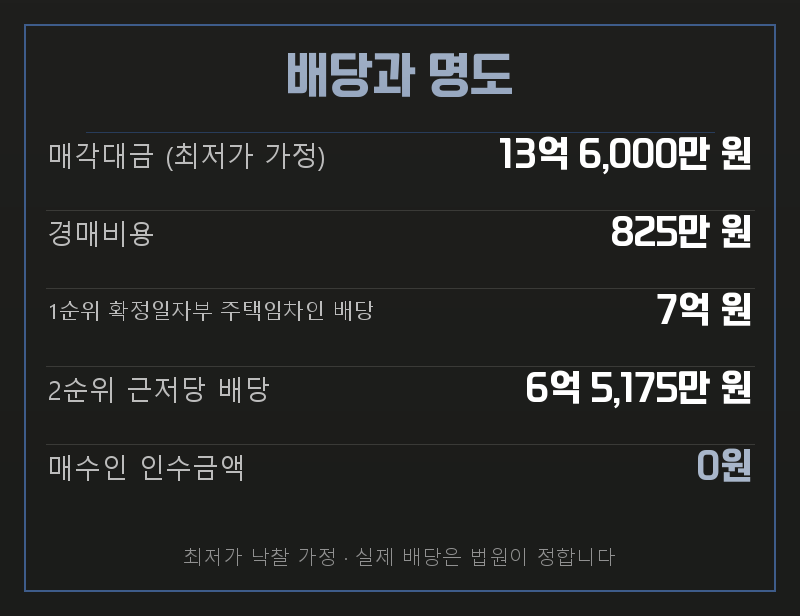
매각대금 13억 6,000만 원 · 경매비용 825만 원 · 1순위 확정일자부 주택임차인 배당 7억 원 · 2순위 근저당 배당 6억 5,175만 원 · 매수인 인수금액 0원
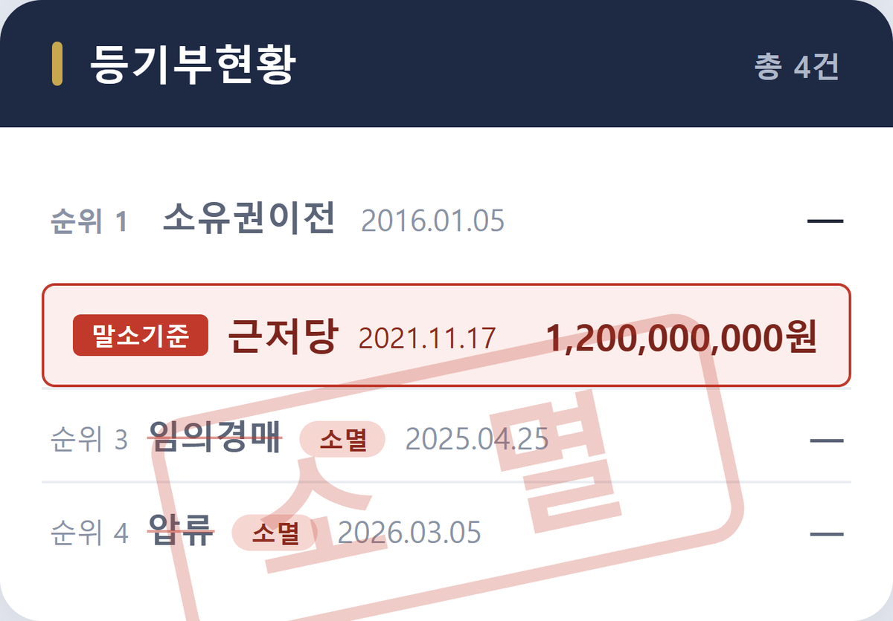
임차인이 배당에서 전액을 받으려면 매각대금에서 경매비용을 뺀 금액이 보증금 7억 원 이상이어야 합니다. 그 아래로 내려가면 못 받은 잔액이 생기고, 그 잔액은 낙찰자가 인수합니다.
이번 회차 최저매각가는 13억 6,000만 원입니다. 보증금 7억 원의 약 두 배라 경매비용을 빼고도 전액 배당에 여유가 큽니다. 이번 차수에서는 인수 위험이 없습니다.
[추정 · 최저매각가 기준 예상배당표에 따른 계산입니다]
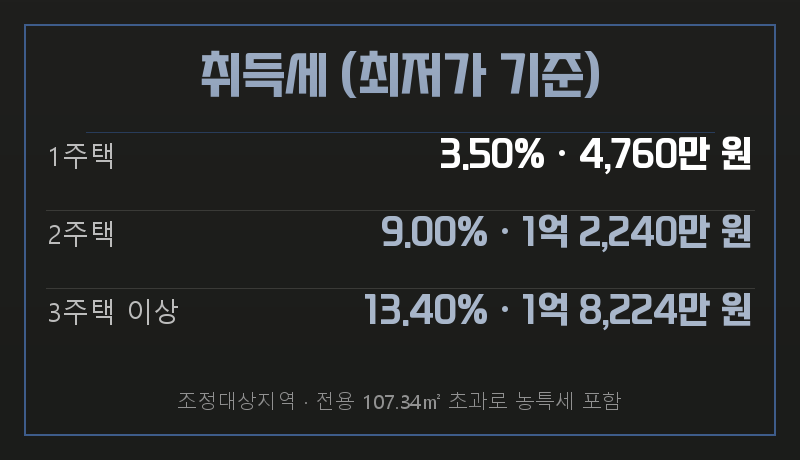
최저가 기준 취득세 — 1주택 3.50%(4,760만 원) · 2주택 9.00%(1억 2,240만 원) · 3주택 이상 13.40%(1억 8,224만 원). 조정대상지역이고 전용 107.34㎡라 농어촌특별세가 포함됩니다. 기준일 2026년 7월 1일 · 세율은 변동되므로 실행 전 세무사 확인이 필요합니다.
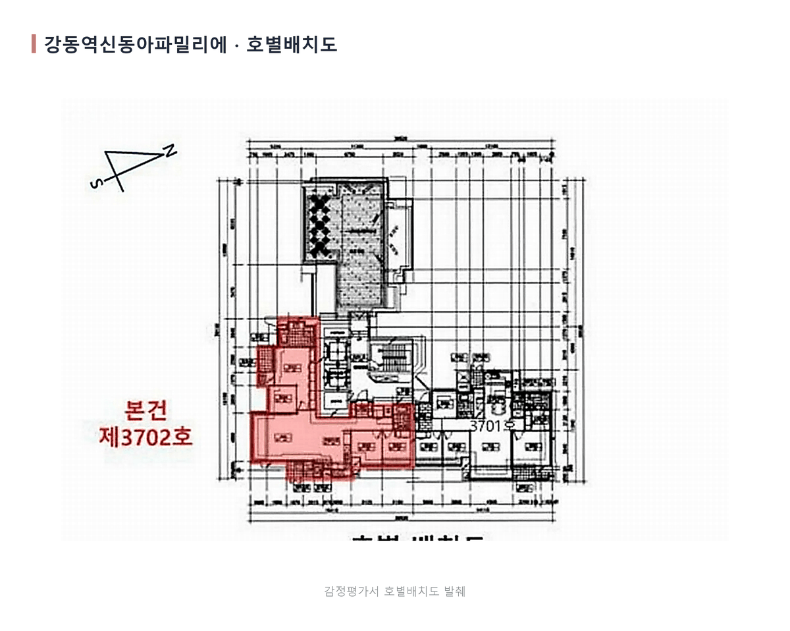
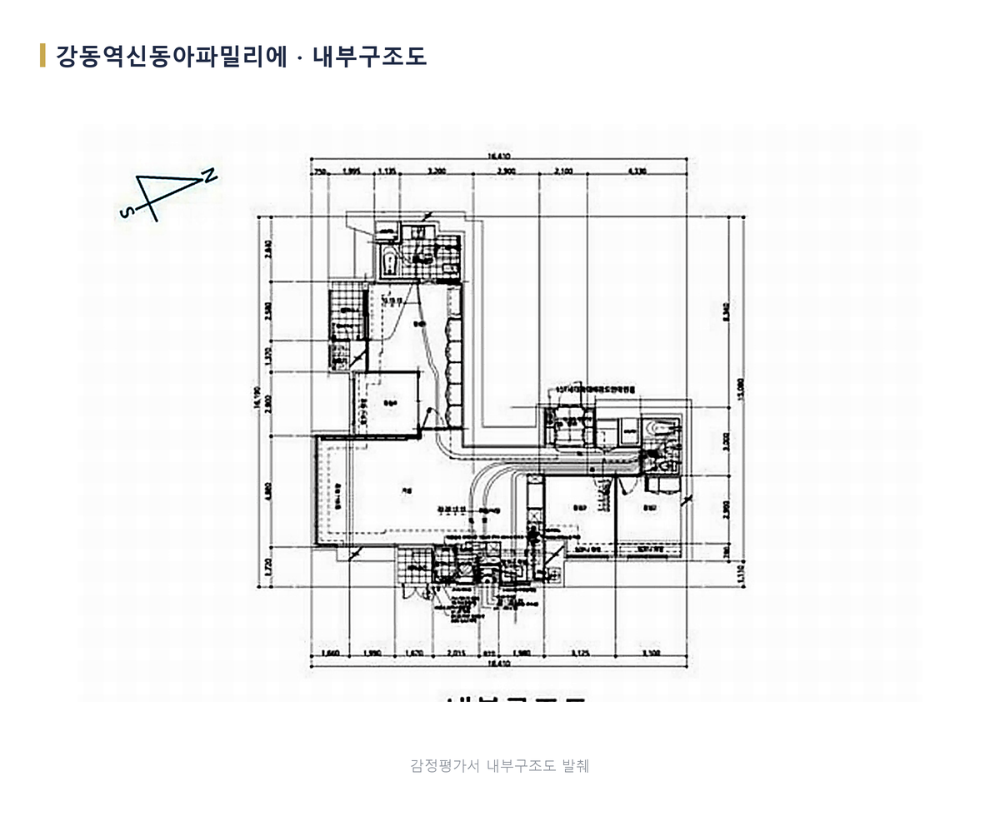
[매니저 · 에디터에서 「동영상」 업로드] 이 폴더의 영상.mp4 를 에디터 동영상 버튼으로 올려 주세요.
[매니저가 채울 한 줄] 현장에서 직접 확인한 것을 한 문장으로 적습니다. (예: 관리사무소에서 미납 관리비가 없다고 확인했습니다) — 비워 두어도 대본은 나옵니다. 다만 이 한 줄이 사람 글과 AI 글을 가르는 가장 큰 신호라, 채우면 검색 평가에서 유리합니다(NO_EXP 감점 회피).
등기부등본에 새로 접수된 권리가 없는지, 매각물건명세서 비고란에 변동이 없는지, 그리고 관리사무소에 미납 관리비가 남았는지를 입찰일 직전에 다시 봅니다. 이 세 가지는 매각기일 사이에도 바뀝니다.
강동역신동아파밀리에 43평형, 이번 회차 물건분석이었습니다. 사건번호를 알려주시면 권리·점유·시세를 개별 조건에 맞춰 확인해 드립니다.
더핀부동산중개법인 · 대표번호 1668-1090 · 서울 강남구 선릉로93길 40, 611호
#강동역신동아파밀리에 #강동구아파트경매 #천호동경매 #법원경매물건분석 #더핀부동산중개법인
점수를 크게 쓰지 않는 이유가 있습니다. 채점표 22항목 중 코드가 완전히 판정하는 것은 3개뿐입니다(키워드 반복 STUFF · 경험 서술 NO_EXP · 문단 구조 STRUCT). “91점”만 띄우면 22개를 다 본 것처럼 읽히지만 실제로는 3개를 본 것입니다.
사람이 봐야 넘어가는 4개는 이렇습니다.
① 제목·본문 키워드가 이 물건과 맞는가 — 강동역신동아파밀리에·천호동·43평형으로 맞췄습니다.
② 핵심 숫자가 이미지 밖에도 있는가 — 표 4개로 냈습니다. 감정가·최저가·보증금·인수금액이
전부 본문 텍스트라 검색로봇이 읽습니다.
③ 타사 글과 소제목·도입문이 겹치지 않는가 — 소제목 7개 전부 이 사건 고유 사실에서 나왔습니다.
④ 매니저 현장 한 줄이 들어갔는가 — 아직 비어 있습니다.
차단 항목이 아닙니다 — 비워 두어도 대본은 나옵니다. 다만 사람 글과 AI 글을
가르는 가장 큰 신호라 채우면 검색 평가에서 유리합니다.
매각물건명세서는 “대항할 수 있는 임차인 있음 · 잔액을 매수인이 인수”라고 경고합니다. 대부분의 글은 여기서 멈추고 “위험한 물건”이라 씁니다.
한 겹 더 열면 임차인이 배당요구를 종기 안에 했고 확정일자가 근저당보다 앞서므로 보증금 7억 원이 전액 배당됩니다. 인수금액은 0원입니다. 보증금이 전액 배당되는 문턱이 어디인지도 예상배당표가 있어야 나옵니다 — 다만 다음 차수의 기일·최저가는 쓰지 않습니다(문체 정본 A-15 · 대표 확정 2026-08-15).
번호도 질문형도 쓰지 않았습니다. 근거 = 문체 정본 B-2(소제목이 글의 구성을 해설하면 안 된다) · B-10(명사+조사로 툭 던지지 않는다). 이 저장소의 옛 글 6편은 전부 “이 사건 기본 현황입니다”로 시작하는데, 그것이 B-2가 금지한 형태입니다.
「일정」과 「장소」는 붙여넣기로 안 들어갑니다. 화면의 카드는 미리보기이고, 매니저가 에디터 버튼으로 넣어야 네이버가 지도를 그립니다. 두 지도는 서로 다른 것을 가리킵니다 — 일정 = 입찰 법원, 장소 = 물건 단지.
· 입찰 시각을 수집하지 않습니다. 10:00~11:10 은 같은 법원·같은 날짜 사건에서
가져온 값입니다. 사건마다 자동으로 채우려면 수집 배선이 필요합니다.
· 타일 그림이 아직 계정별로 갈리지 않습니다. 자스크(남색)와 내연예인(금색)의
색 정의는 있으나 타일이 그것을 읽지 않아 지금은 네 계정이 같은 그림을 씁니다.